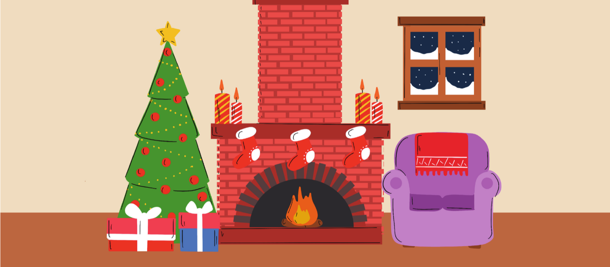

Mirëkuptimi, solidariteti, empatia dhe respekti ndaj të tjerëve
Shumëllojshmëria fetare në vendin tonë
Situata 2.
Mësuesja na tregoi se kur ajo kishte qenë nxënëse, disa shokë festonin Bajramin e disa Krishtlindjet. Në çdo festë sillnin ëmbëlsira nga shtëpia dhe i ndanin me klasën.
Ajo na tha se të gjithë gëzoheshin për njëri-tjetrin dhe se festa bëhej më e bukur kur festonim së bashku. Kishim shumë respekt për festat e njëri-tjetrit dhe sa shumë kënaqeshim bashkë!
